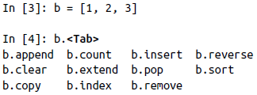

Python for Data Analysis
Wes McKinney
Tab completion:
When assigning a variable in Python, you are creating a reference to the object on the righthand side of the equals sign. In some languages, this assignment would cause the data [1, 2, 3] to be copied; in Python, a and b actually now refer to the same object, the original list [1, 2, 3]:

When you pass objects as arguments to a function, new local variables are created referencing the original objects without any copying:

To check if two references refer to the same object, use the is keyword. is not is also perfectly valid if you want to check that two objects are not the same:

Since list always creates a new Python list (i.e., a copy), we can be sure that c is distinct from a. Comparing with is is not the same as the == operator, because in this case we have:

A very common use of is and is not is to check if a variable is None, since there is only one instance of None:

None is a common default value for function arguments:

pass can be used in blocks where no action is to be taken (or as a placeholder for code not yet implemented); it is only required because Python uses whitespace to delimit blocks:
The range function returns an iterator that yields a sequence of evenly spaced integers:


Both a start, end, and step (which may be negative) can be given:

As you can see, range produces integers up to but not including the endpoint. A common use of range is for iterating through sequences by index:

A ternary expression in Python allows you to combine an if-else block that produces a value into a single line or expression: